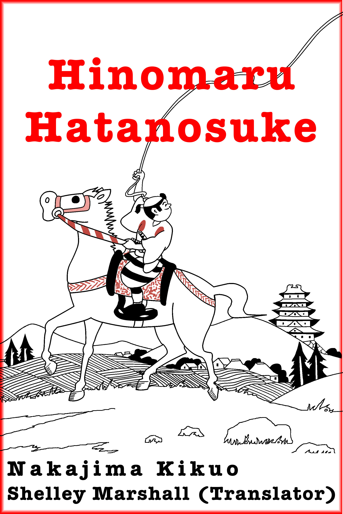

Few works are translated into English from any foreign language. My puny contribution to this void is the translation of popular Japanese literature in the public domain. Vast stores of Japanese literature can be found online at Aozora Bunko and the National Diet Library Digital Collections (NDL).
I translate what I find interesting through a combination of reading about Japanese authors and works on the Web, book reviews on Amazon Japan, word searches on the NDL, and flukes. The works I have translated range from a samurai manga to the recollections of an influential twentieth-century scientist. Future translations include a ninja manual and a samurai novel.
|  | Hinomaru Hatanosuke, by Nakajima Kikuo, a teacher and a manga artist, ran as a serial from January 1935 to September 1941 in the boys' magazine Shonen Club (少年倶楽部). The kids enjoyed these adventures of a samurai teenager. Download a PDF of Chapter 1. The whole adventure in ebook form can be purchased ($3.99) from Amazon.com, Amazon Japan, Barnes & Noble, iTunes, Kobobooks, Rakuten, or Smashwords. Here is the original manga 日の丸旗之助. |